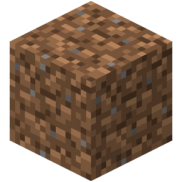

|  |
| The icon representing The Hypixel Pit in the Game Menu. |
The Hypixel Pit is a persistent game on the Hypixel Network. It can be accessed by selecting the dirt block in the Game Menu compass in any lobby or by typing the command /play pit.
Upon joining the Hypixel Pit for the first time, players are sent to the game's spawn area. The primary objective of The Pit is to kill players to obtain as much XP as possible by any means possible, usually by using gold to facilitate the process. The primary way to earn both XP and gold is by killing (or assisting in the kills on) other players in the combat areas of The Pit. There are five unique maps in the Hypixel Pit, but all of them have a center area and four quadrants surrounding it that players may fight in.
When players gain enough XP, they automatically level up, increasing their level by 1. Levels are required to unlock multiple aspects of The Pit, such as certain commands, the ender chest, and contracts.
When players earn enough gold, they may temporarily upgrade their gear by purchasing items in the Item Shop, and after reaching level 10, may permanently grant themselves perks and passive upgrades by purchasing them in the Upgrades NPC.
When players reach level 120, they will have the option to prestige – one of the most important aspects of The Pit. Prestiging resets the player's level to 1 and resets all their unlocks, also increasing the XP required to level up, but gives them access to renown and the renown shop, where they can access stronger upgrades than were previously available – the more times a player prestiges, the more upgrades will be available.
In the Hypixel Pit, multiple mechanics are added to help players survive and progress: